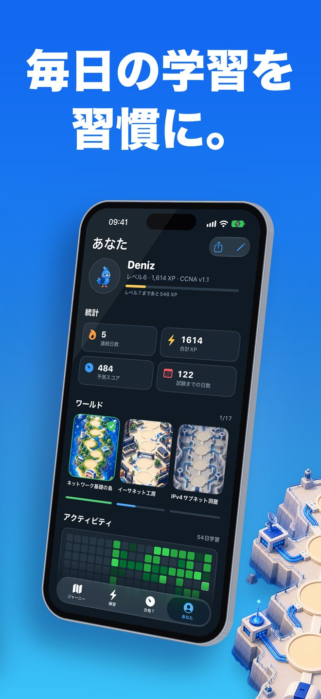

Linkwingとは何ですか？
ネットワークの「わからない」を、ゼロから「わかった」に。Kaviと一緒に、島を飛び回って学ぶネットワーク入門アプリです。
IPアドレスって何？ スイッチとルーターはどう違う？ そんな疑問から始められるよう、専門用語をかみ砕いた短いレッスンを用意しました。基礎がついたら、そのままCCNA 200-301の試験対策へ進めます。
スクリーンショット

こんな方に
- ネットワークをまったく知らない初心者の方
- ITエンジニアへのキャリアチェンジを考えている方
- ITを学んでいる学生の方
- CCNA 200-301を受験する予定の方
使い方
- レベルを選びます。まったくの初心者ならレッスン1から、経験のある方は5問の適応型チェックアップで、すでに知っている範囲をスキップできます。
- イラストの地図を進みます。青いオカメインコのKaviが、島から島へ飛んで案内します。
- 1日数分のレッスンと問題で、少しずつ積み上げます。
ゼロから始める「Start Here」
- 2つのワールドに17本の短いレッスン（ネットワークの基本、オフィスネットワークのしくみ）
- ノード、クライアントとサーバー、スイッチ、ルーター、ファイアウォール、LAN/WAN/インターネット、IPアドレスとMACアドレス、Wi-Fi、VLAN、RAID、NAS、バックアップなどを日常の例えで解説
- 図解つき。ハイライトされた用語をタップすると、やさしい言葉で意味が表示されます
- 各レッスンの最後にかんたんなクイズ。間違えた選択肢も、なぜ違うのかを解説します
ゲーム感覚で続けられる
- 15の試験ワールドを、イラストの地図で一つずつ攻略
- ストリーク、XP、バッジ、デイリークエスト
- ウィジェットで今日の1問。リマインダーは設定した場合のみ届きます
Ccna試験対策
- オリジナルの試験形式問題1,100問以上（図の参照、2つ選択、並べ替え、組み合わせ、計算）
- 間隔反復で覚えるフラッシュカード900枚以上
- 実際にIOSコマンドを入力する75本のコマンドラボ（省略形も使えます）
- サブネットジム：自動生成の練習問題でサブネット計算を鍛えます
- 出題配分を試験範囲に合わせた、時間制限つきの模擬試験
- CCNA 200-301 v1.1に対応し、2027年2月3日からのv2.0にも対応
正直な「合格できる？」
予測スコア（1000点満点）は、初見で40問に答えるまで表示しません。根拠のない数字でぬか喜びさせないためです。「試験日への道」のチェックリストで、残りの課題も確認できます。合格を保証するものではありません。
試験日予測では、毎日の学習ペースでいつ準備が整うかを、スコアの推移とあわせて確認できます。
言語とオフライン
- アプリ内で言語を切り替えできます（日本語、English、Español、Português、한국어、العربية、Türkçe、简体中文の8言語）
- アカウント登録は不要。オフラインでも学習できます
入門レッスンも試験レベルのレッスンも日本語で学べます。試験形式の問題とIOSコマンドラボは英語です。
Linkwing Proについて
一部の内容は、任意のLinkwing Pro（自動更新サブスクリプション）で利用できます。購入前に購入画面で内容と条件をご確認ください。管理・解約はAppleアカウントの設定から行えます。
よくある質問
Linkwingとは何ですか？
Linkwingは、コンピュータネットワークをゼロから学び、Cisco CCNA 200-301試験の対策ができるiPhoneアプリです。2つのワールドに17本の入門レッスン、青いオカメインコのKaviが案内する15の試験ワールドのイラスト地図、オリジナルの試験形式問題1,136問、フラッシュカード929枚、IOSコマンドラボ75本、サブネットジム、時間制限つきの模擬試験を収録しています。iOS 26以降に対応し、開発者はAta Tunc Bilgeです。
Linkwingは無料ですか？
Linkwingは無料でダウンロードして始められます。Linkwing Proは、すべてのコースを利用できる任意の自動更新サブスクリプションです。管理・解約はAppleアカウントの設定から行えます。
問題は実際のCCNA試験問題ですか？
いいえ。Linkwingの問題はすべてオリジナルで、試験の形式に合わせて作成したものです。実際の試験問題や、いわゆるダンプは使っていません。答えを暗記するのではなく、内容を理解することが目的です。
CCNA v2.0に対応していますか？
はい。Linkwingは、2027年2月2日までの試験が対象のCCNA 200-301 v1.1と、2027年2月3日からのv2.0に対応しています。どちらの出題範囲で学ぶかは、試験日から選ばれます。詳細はCiscoの公式試験トピックのページでご確認ください。
日本語で学べますか？オフラインでも使えますか？
はい。アプリの表示は日本語を含む8言語に対応し、アプリ内で切り替えられます。17本の入門レッスン（図の説明文と、タップで意味が表示される60語の用語集を含む）も、試験レベルのレッスンも、すべて日本語に翻訳されています。試験形式の問題とIOSコマンドラボは英語です（CCNA試験は英語と日本語で受験できます）。アカウント登録は不要で、オフラインでも学習できます。